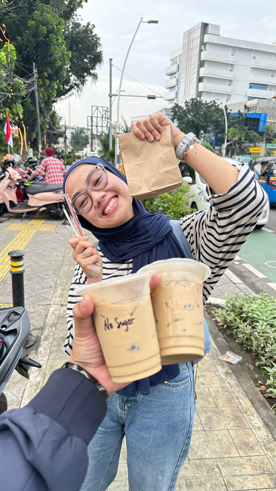
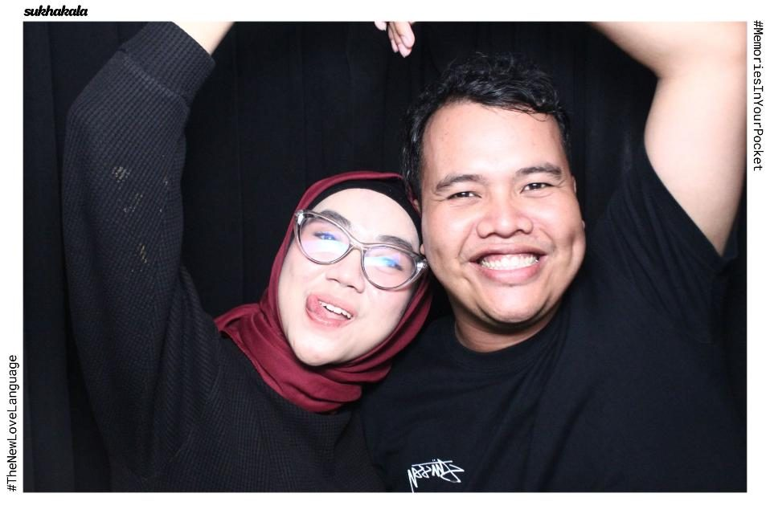
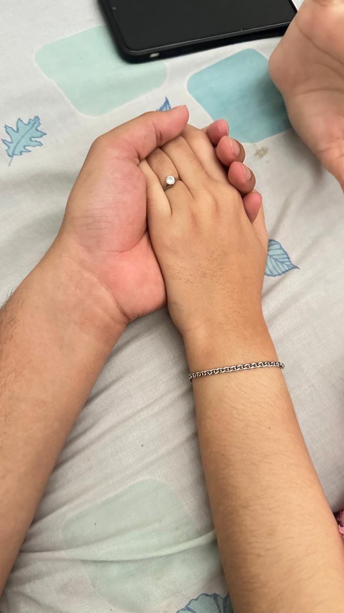
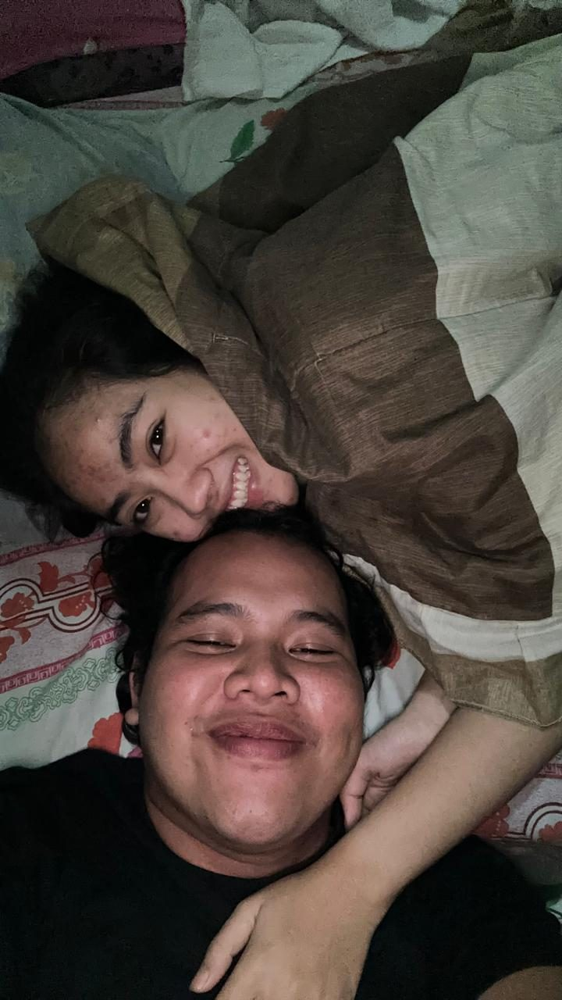
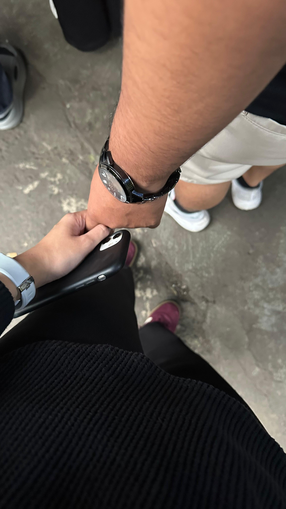
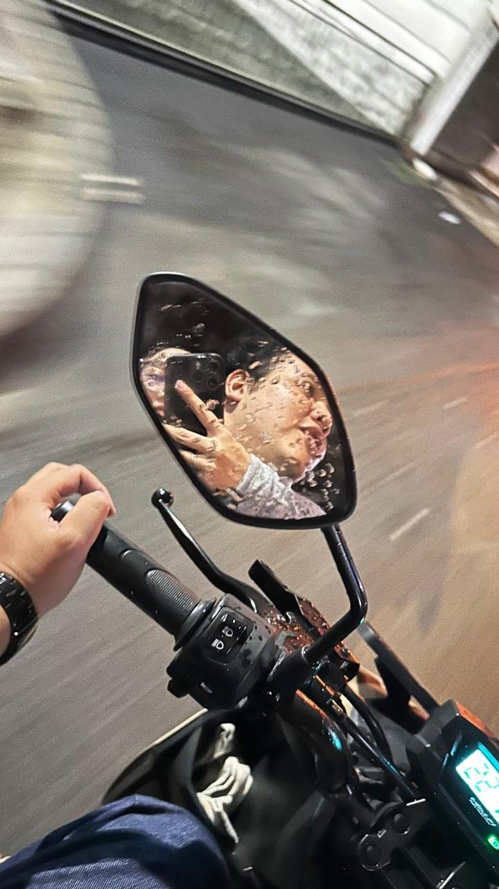
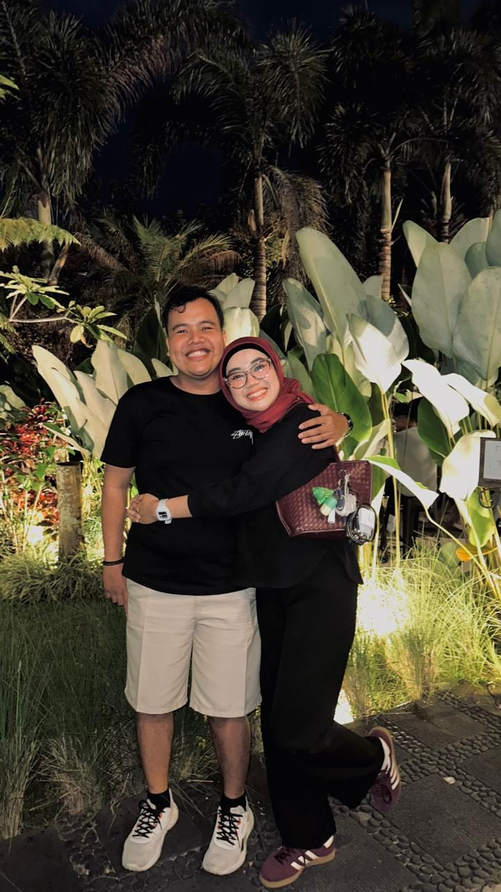
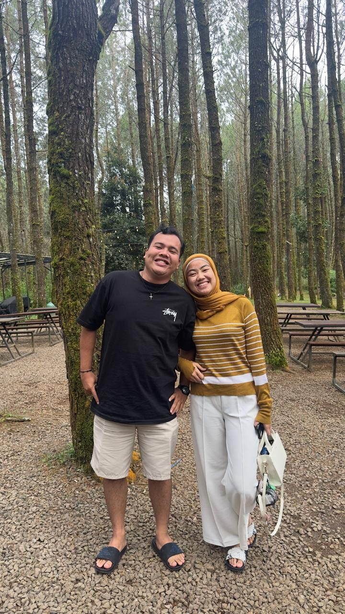
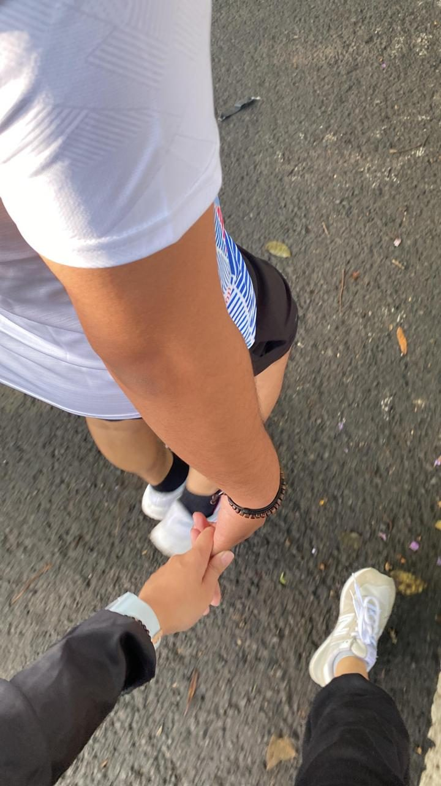

Untuk Wanita
Hebat dan tangguh

Hai apaa kabar? Semoga kamu ga terganggu ya dengan pesan terakhir dari aku ini dan mungkin akan sedikit agak panjang juga untuk di baca
Hari ini adalah hari yang spesial buat kamu. Aku nggak lupa kok 15 juni adalah hari ulang tahun kamu, hari di mana seorang wanita yang lucu, imut, menggemaskan juga hebat, kuat, dan tangguh dilahirkan ke dunia ini. Aku selalu bangga sama kamu, karena aku tahu nggak semua hal yang kamu lewati itu mudah. Sudah banyak banget beban, masalah, dan tantangan yang berhasil kamu hadapi sendiri sampai sejauh ini. Tapi kamu tetap berdiri, tetap berjuang, dan tetap menjadi pribadi yang hebat. Semoga di usia yang baru ini kamu selalu diberikan kesehatan, kebahagiaan, umur yang panjang, serta dimudahkan dalam setiap langkah yang kamu jalani. Semoga rezekimu selalu dilancarkan, urusanmu dipermudah, dan semua doa, harapan, serta impian yang kamu simpan perlahan menjadi kenyataan. Aaminn. Terima kasih karena pernah menjadi bagian dari cerita hidupku dan memberikan banyak kenangan yang sampai hari ini masih aku simpan dengan baik. Apa pun yang terjadi dan sejauh apa pun jalan yang kita pilih sekarang, aku tetap mendoakan yang terbaik untukmu. Selamat ulang tahun yaa. Semoga tahun ini menjadi salah satu tahun terbaik dalam hidupmu. Dan di antara banyaknya doa yang aku panjatkan hari ini, ada satu doa sederhana: semoga kamu selalu bahagia, di mana pun, dengan siapa pun, dan dalam keadaan apa pun. ❤️ Tapi aku sedih tau gabisa rayain moment ini sama kamu disana, moment yang udah aku rencanakan dari pas kita masih bahagia bersama🥺 Oh iyaa semoga kamu suka ya sama kadonya kalo emang kamu gasuka disimpen aja ya gapapa kok anggap aja kenang - Kenangan terakhir dari aku atau kamu bisa jual lagi aja juga gapapa lumayan uangngnya bisa buat jadi tabungan kamu hehe. Tapi aku bakal bahagia banget kalo kadonya bisa kamu pakai 🥹

Oh iyaa sekalian
Aku izin pamit yaa
Sepertinya semuanya sudah selesai dan aku sudah ikhlas kalo memang kita harus berakhir
Mungkin seharusnya waktu itu aku tidak perlu mengungkapkan semua perasaan yang aku rasain yaa, supaya kita masih tetap bisa bersama seperti sebelumnya. Tapi ternyata, mungkin memang jalannya harus seperti ini. Tapi aku sedih sejak kamu pergi dan menghilang dari hidup aku, duniaku sangat tidak baik-baik saja. Aku kehilangan arah, gapunya rumah dan tujuan. juga makin ga terawat🥺
Tapi aku sangat berterima kasih sama kamu, karena kamu sudah pernah hadir di dalam hidupku. Mengenal kamu adalah salah satu hal paling indah buat aku. Dari yang awalnya aku hanya bisa melihat kamu sebagai orang asing dari jauh, sampai akhirnya aku diberi kesempatan untuk mengenalmu lebih dekat dan menjadi bagian kecil dari hidupmu.


Aku sangat senang sekali bisa kenal kamu. Aku sangat sangat bahagia, walaupun ternyata kita hanya sebentar. Aku senang dengan waktu-waktu sederhana yang pernah kita punya, saat kita cerita tentang hal kecil, kamu ajak aku motoran menyusuri kota bandung lalu beli kopi yang kamu mau dan mencoba beberapa kuliner disana, juga saat kamu mau dengar cerita dan keluh kesahku, saat kamu support aku, saat kamu ada ketika aku bosan, saat kamu masakin aku dengan berbagai menu yang aku mau apa lagi mie goreng dengan bumbu rahasia kamu dan nasi goreng fav aku 🥺 juga saat kamu menjadi bagian dari hari-hariku yang indah kemarin.


Terima kasih karena sudah sangat sabar menghadapi aku. Terima kasih karena pernah memilih untuk tetap tinggal, meski mungkin aku sering membuatmu lelah. Aku sadar, selama ini aku banyak berbuat salah. Aku belum cukup bisa mengerti kamu, belum cukup memahami kamu, dan mungkin tanpa sadar aku sering merepotkanmu, membuatmu kesal, marah, bahkan risih. Untuk semua itu, aku benar-benar minta maaf sebesar-besarnya.
Aku tahu kamu sudah memilih jalan yang menurutmu terbaik. Dan meskipun berat buat aku menerima semuanya, aku akan belajar menghargai keputusan itu. Aku yakin kamu juga sudah lelah dengan hubungan ini. Maaf kalau selama ini aku terlalu kekanak-kanakan, terlalu alay, terlalu banyak berharap, dan terlalu sering membuat semuanya terasa berat.
Jujur, aku tidak pernah mau kita pisah dan jadi asing. Tapi mungkin tidak semua yang ingin kita pertahankan bisa tetap tinggal. Ada hal-hal yang memang harus dilepaskan, bukan karena kamu dan aku sudah tidak saling sayang, tapi karena memaksa seseorang untuk tetap ada dan tinggal juga bukan bentuk cinta yang baik.


Hari dimana kamu memutuskan blokir wa & all sosmed aku, aku juga mencoba berusaha melepaskanmu. Bukan karena aku berhenti peduli, tapi karena aku sadar langkahmu mungkin akan terasa lebih ringan tanpa beban perasaanku yang terus menahanmu untuk menoleh ke belakang. Aku ingin mengembalikan lagi seluruh ruang di hidupmu, ruang yang mungkin selama ini terlalu penuh oleh aku, oleh ceritaku, oleh harapanku, dan oleh semua hal yang tanpa sadar membuatmu tidak nyaman.
Sepertinya kamu sudah bahagia dengan Menikmati pagi-pagi yang tenang tanpa pesan dariku yang menanyakan kabarmu bagaimana, tidurmu semalam, apakah kamu sudah makan dan ngopi, atau bagaimana dengan harimu dikantor juga dirumah dan bagaimana kuliahmu. Aku juga liat kamu banyak pergi ke tempat-tempat baru dan mencoba hal-hal baru, menemui orang-orang baru, dan menemukan kembali tawa yang lebih lepas, tawa yang tidak perlu disembunyikan atau dibagi dengan rasa bersalah.
Jangan bandingkan siapa pun dengan kisah kita. Aku akan mencoba ikut bahagia dari jauh, karena mungkin luka yang pernah ada di antara kita bisa menjadi pelajaran untuk kebahagiaanmu yang baru.
Sehat-sehat terus yaa cantik. Aku tahu kamu tipe yang suka menahan semuanya sendiri, tapi jangan lupa jaga diri juga. Jangan sering telat makan, jangan terlalu larut dalam capek yang kamu pendam sendirian. Kalau harimu berat, tarik napas pelan-pelan dan juga jangan lupa buat ngopi tapi inget jangan terlalu over juga ya ngopinya. Semua ini tidak akan selamanya begini. Semoga kamu tetap punya alasan untuk tersenyum dan selalu ceria seperti hani yang ku kenal, meski kadang rasanya tidak mudah.
Semoga semua impian yang pernah kamu ceritakan, yang dulu membuat matamu bersinar saat menyebutnya, pelan-pelan bisa jadi nyata. Aku tahu kamu sedang berproses, dan aku percaya kamu akan sampai juga bisa mewujudkan semunya.

Selamat merayakan kebebasanmu dari segala ekspektasi yang pernah aku bebankan padamu. Kamu berhak atas hidup yang tenang, hidup yang penuh kemungkinan tanpa bayang-bayang masa lalu. Aku juga akan belajar merawat diriku sendiri, bagian dari diriku yang sempat terlalu fokus mengurusi duniamu sampai lupa bahwa aku juga perlu pulang ke diriku sendiri.
Melepaskanmu mungkin adalah cara terakhirku mencintaimu, dengan membiarkanmu bernapas lega di kehidupan yang tidak lagi menyisakan tempat untuk namaku.
Kita pernah menjadi dua orang yang saling mencoba membahagiakan. Walaupun akhirnya tidak berjalan sampai jauh, aku tetap bersyukur karena pernah mengenalmu. Tidak ada dendam, tidak ada benci. Hanya ada terima kasih, maaf, dan doa baik yang akan tetap aku simpan dengan tenang.
Mulai sekarang, aku benar-benar berhenti menghubungimu lagi dan mencari tau segala hal tentang kamu. Bukan karena aku tidak peduli, tapi karena aku ingin menghargai keputusanmu dan memberi ruang untuk kita sama-sama melanjutkan hidup.
Selamat melanjutkan perjalananmu. Aku pun akan mencoba melanjutkan perjalananku. Untuk perihal hal yang membuat hubungan kita selesai mungkin masalah yang menurut kamu aku selalu ungkit tentang uang atau effort untuk nemuin kamu atau apapun itu dan juga tentang kenok temenku yang problematik itu aku betul-betul minta maaf yaa cantik karena itu melukai hati kamu tapi apapun yang aku berikan aku selalu iklas dan bahagia kalau buat kamu, mungkin itu hanya salah paham kamu. maksud aku waktu itu hanya ingin meyakinkan kamu bahwa aku bener-bener serius sama kamu dan hubungan ini. tapi mungkin cara menyampaikannya yang aku salah sehingga melukai hati dan ego kamu, aku tidak ada satu niat pun untuk melukai hatimu, jika kau merasa aku membuat mu sakit hati, aku sangat-sangat minta maaf ya. aku harap kamu bisa memahami maksud aku yang baik 🥺
Selamat tinggal untuk kisah kita. Selamat tinggal bandung 👋🏻
Sepertinya bandung akan selalu menjadi kota yang aku sangat benci karena terlalu banyak tentang kisah kita disana dan mungkin tidak akan ku kunjungi sampai waktu yang lama 😊
Jangan lupa selalu bahagia ya.
Terima kasih untuk semuanya.
And Im Still Loving You🫶🏻🖤 From : Muhammad Nuzuly — Jakarta